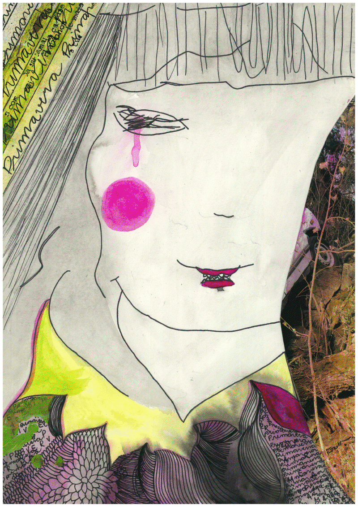

*para ler ouvindo esse som, por Sília Moan
Com o gosto na boca da estação passada e o frio nos dedos, aguardamos os raios de sol primaveris. Eis que por entre folhas eles vão surgir, flores vão cair e vamos sentir que estamos encenando e não vivendo. Qual é a diferença entre ser, de fato, e viver? Ou melhor, um é realmente inerente ao outro? Por ser uma estação que é logo junto do inverno, posterior e colada a ele, a privamera traz esse tipo de reflexão, mas agora em outro tom: com cores.
Nasce Zophie, filha de Zephyr com Sofia. Ela é ritmo de vento, vontade de afinar o instrumento que passou o inverno guardado e sair tocando em flores. Zophie deixa o cabelo voar, deixa raízes tomarem conta de seu pescoço e galhos invadirem sua cabeça.
É a mescla de Wiqua e de Pozimi, ambas inspiradas em cartazes da década de 20 do art nouveau. Tem um rosto duro, como a musa do inverno, mas seu contexto é de flores, vento e sensações primaveris.